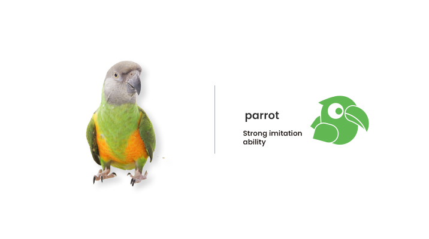
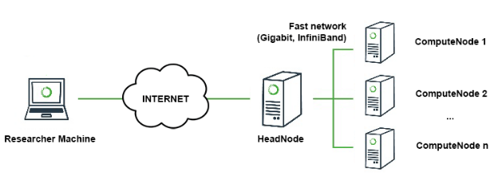
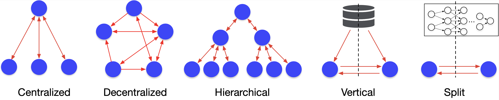

FedML Parrot User Guide¶
FedML Parrot, a cute pet which is good at mimicking human to speak, is to help researchers and engineers to try new algorithms before deploying FL into real world. Compared to other simulators, FedML Parrot brings additional values as follows:
mitigating the gap between research and engineering: before convincing your ML infrastructure team to do non-trivial algorithmic and system upgrading, you can use FedML Parrot to demonstrate the benefit of newly developed federated learning algorithms or applying FL to your existing ML applications. FedML Parrot can smoothly transplant your simulation code to real-world deployment with our MLOps platform (open.fedml.ai). This has been demonstrated by real business use cases served by FedML Inc.
simplifying your research: ML researchers can try quick algorithmic ideas without handling tedious engineering. For example, Dr. Chaoyang He. has published 30+ FL-related publications using FedML framework in just 2-3 years.
teaching with tangible live demo: professors can use FedML Parrot to teach students the FL algorithmic skeleton without large-scale GPU resource. If you are a professor, don’t hesitate to use FedML.
In the simulation environment, FedML Parrot assumes that you have the infrastructure as shown in the following figure. You can run your experiments in your laptop or the cluster.
Outline¶
Installation
Dataset and Models
Algorithm Reference Implementations
Benchmark
Examples
Installation¶
pip install fedml
For more installation methods, please follow instructions at installing FedML.
Algorithm Reference Implementation¶
FedML Parrot supports representative algorithms in different communication topologies (as the figure shown below), including Fedvg, FedOpt (ICLR 2021), FedNova (NeurIPS 2020), FedGKT (NeurIPS 2020), Decentralized FL, Vertical FL, Hierarchical FL, FedNAS, and Split Learning.
For more details, please read Algorithm Reference Implementation.
Datasets and Models¶
FedML supports comprehensive research-oriented (synthetic and public) FL datasets and models, including four representative synthetic FL datasets used by top-tier publications:
EMNIST: EMNIST dataset extends MNIST dataset with upper and lower case English characters.
CIFAR-100: CIFAR-100 dataset consists of 100 image classes with each containing 600 images.
Shakespeare: Shakespeare dataset is built from the collective works of William Shakespeare.
Stack Overflow: Stack Overflow dataset originally hosted by Kaggle consists of questions and answers from the website Stack Overflow. This dataset is used to perform two tasks: tag prediction via logistic regression and next word prediction.
For a comprehensive dataset and model list, please visit Datasets and Models.
Customizing Data Loader for Your Own Dataset¶
You may need to plugin new datasets into FedML framework. Please follow instruction at Customizing Data Loader for Your Own Dataset.
Benchmark¶
To do sanity check of FedML Parrot in your environment or fairly compare newly developed algorithms with baselines, please refer to benchmarking results at:
Examples¶
FedML Parrot provides rich well-documented examples for you to get started: FedML Parrot Examples.